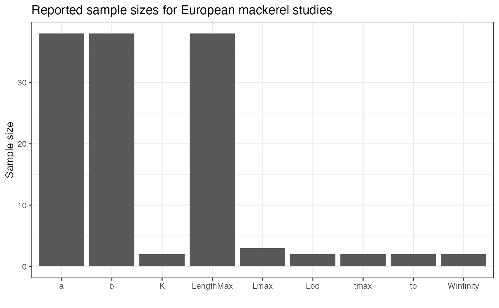
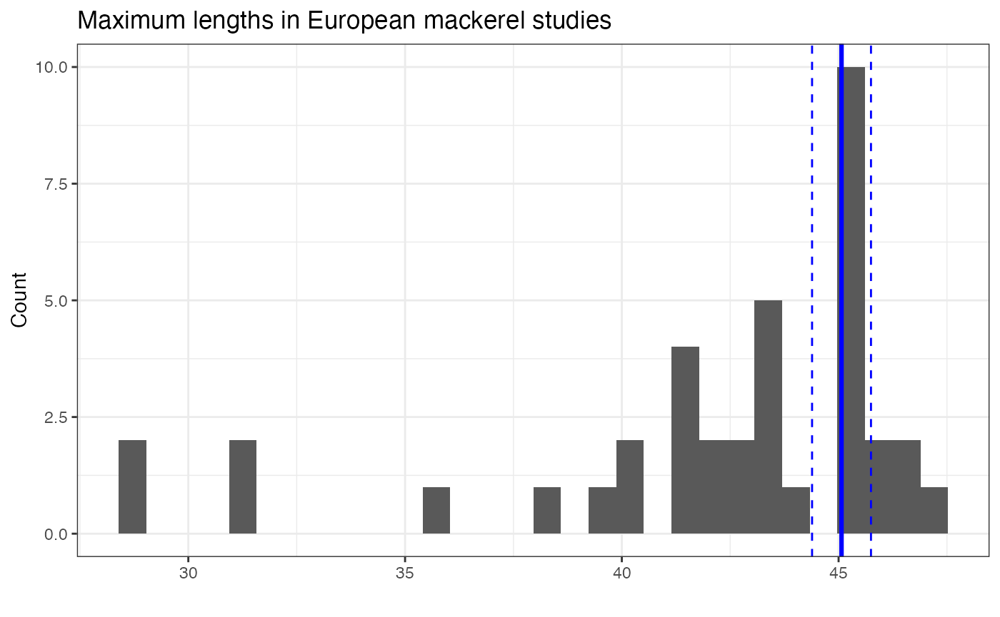

The vignette provides a slightly more complicated example of how to
use the fishprior package to combine parameters into a meta-analysis.
The summarize_fishbase_traits() function produces summary
statistics across studies, weighting estimates equally and ignoring
sample sizes or standard errors of estimates. We provide two case
studies below, first examining maximum length of European mackerel
(weighting studies by sample size), and second examining growth rates of
sablefish (weighting studies by standard errors).
FishBase includes sample sizes (Number) and standard
errors (SE) when available, however these may not be
available for most records, and there may be variability in reporting by
species or trait type. For full details, see the following tables
| FishBase.tables.used |
|---|
| rfishbase::popgrowth |
| rfishbase::popchar |
| rfishbase::poplw |
| rfishbase::maturity |
| rfishbase::fecundity |
To illustrate how point estimates may combined in a more traditional
meta-analysis, we’ll use data from the European mackerel (Scomber
scombrus). Data can be obtained from FishBase using
get_fishbase_traits() – more detailed information is in the
introductory vignette. We will focus this example on maximum length
(LengthMax) because it is one of the variables in
rfishbase::poplw() that has an associated sample size, but
not standard error.
species_list <- c(
"Scomber scombrus"
)
example_base_raw <- get_fishbase_traits(spec_names = species_list)
example_base_raw## # A tibble: 285 × 22
## rfishbase Species SpecCode Sex PopGrowthRef DataSourceRef Locality
## <chr> <chr> <int> <chr> <int> <int> <chr>
## 1 popgrowth Scomber scombrus 118 unse… 207 NA Northwe…
## 2 popgrowth Scomber scombrus 118 unse… 207 NA Northwe…
## 3 popgrowth Scomber scombrus 118 unse… 207 NA Northwe…
## 4 popgrowth Scomber scombrus 118 unse… 207 NA Northwe…
## 5 popgrowth Scomber scombrus 118 unse… 207 NA Northwe…
## 6 popgrowth Scomber scombrus 118 unse… 312 1208 ICNAF S…
## 7 popgrowth Scomber scombrus 118 unse… 312 1208 ICNAF S…
## 8 popgrowth Scomber scombrus 118 unse… 312 1208 ICNAF S…
## 9 popgrowth Scomber scombrus 118 unse… 312 1208 ICNAF S…
## 10 popgrowth Scomber scombrus 118 unse… 312 1207 New Eng…
## # ℹ 275 more rows
## # ℹ 15 more variables: YearStart <int>, YearEnd <int>, Number <dbl>,
## # Type <chr>, C_Code <chr>, E_CODE <dbl>, SourceRef <int>, StockCode <dbl>,
## # AgeMatRef <int>, trait <chr>, value <dbl>, SE <dbl>, SD <dbl>,
## # country <chr>, EcosystemName <chr>There are differences in reporting between Number and
SE, with fewer studies having standard errors reported.
There may be some rounding or reporting issues with SE,
because at least one of the values is 0. There’s quite a bit of
variation by trait type, with estimates from studies estimating
length-weight regressions reporting Number more commonly
than other studies,

We will filter out studies that don’t report Number, but
an alternative approach would be to set the Number for
these studies to some small value (the smallest reported across all
studies, or 1, etc)
The first way to combine estimates is by applying variance weighting.
To do this, we use Number as the weights for the weighted
mean and variance,
weighted_summary <- filtered_traits |>
dplyr::summarise(
weighted_mean = weighted.mean(value, w = Number),
simple_mean = mean(value),
weighted_var = sum(Number * (value - weighted_mean)^2) / sum(Number),
weighted_se = sqrt(weighted_var / dplyr::n()),
total_n = sum(Number),
n_studies = dplyr::n()
)
weighted_summary## # A tibble: 1 × 6
## weighted_mean simple_mean weighted_var weighted_se total_n n_studies
## <dbl> <dbl> <dbl> <dbl> <dbl> <int>
## 1 45.1 42.0 4.57 0.347 61267 38The vertical blue lines here represent the weighted mean (and 95% confidence intervals); the weighted mean is slightly larger than the simple mean (42).
## `stat_bin()` using `bins = 30`. Pick better value with `binwidth`.
Without the reported study specific standard errors, it is difficult to do a true meta-analysis. However we can estimate a common mean and observation variance, which is another way to use the sample sizes as weights. The reported mean length can be assumed to be an observation of the true study-specific unobserved mean length , where represents the variance across studies,
and then the random effects can be estimated with a common hyperparameters
To fit this model in brms, we can use the following
code. Because maximum size can be skewed, we’ll fit the model in log
space,
library(brms)
filtered_traits$sqrt_n <- 1 / sqrt(filtered_traits$Number)
filtered_traits$study_id <- seq_len(nrow(filtered_traits))
filtered_traits$log_n <- log(filtered_traits$value)
formula <- bf(
log_n ~ theta,
theta ~ 1 + (1 | study_id),
sigma ~ 0 + sqrt_n,
nl = TRUE
)
fit <- brm(
formula,
data = filtered_traits,
family = gaussian(),
chains = 4,
iter = 5000
)For cases where the standard errors exist, a second approach is to do
a true meta-analysis and use the standard errors as weights. For this
example, we’ll focus a meta-analysis on the growth coefficient
(k) of sablefish (Anoplopoma fimbria)
species_list <- c(
"Anoplopoma fimbria")
sablefish_traits <- get_fishbase_traits(spec_names = species_list)
filtered_traits <- dplyr::filter(sablefish_traits,
SE > 0,
trait %in% c("K"))There’s a small number of studies here from 2 regions in the Pacific Ocean, and if we look at breakdown by region, there seems to be substantially smaller values in Alaska.
| Locality | value | SE |
|---|---|---|
| West coast | 0.499 | 0.047 |
| West coast | 0.481 | 0.083 |
| Gulf of Alaska | 0.117 | 0.024 |
| Gulf of Alaska | 0.106 | 0.008 |
| West coast | 0.472 | 0.055 |
| West coast | 0.556 | 0.108 |
| Gulf of Alaska | 0.120 | 0.140 |
| Gulf of Alaska | 0.126 | 0.044 |
It probably makes more sense for interpretation and estimation to focus on a single region, so we will only use estimates from Alaska
The model here can be written as
where and
where the major contrast to above is not assuming a population level , and instead providing the standard error value directly.
An advantage of this approach is that it takes advantages of brms’
existing machinery for doing meta-analyses and using the SE
directly in the se() function